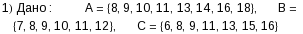
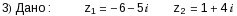

Converted by
Mathematica
September 29, 2015
![[Graphics:Images/index_gr_2.gif]](Images/index_gr_2.gif)
![[Graphics:Images/index_gr_4.gif]](Images/index_gr_4.gif)
![[Graphics:Images/index_gr_7.gif]](Images/index_gr_7.gif)
![[Graphics:Images/index_gr_8.gif]](Images/index_gr_8.gif)
![[Graphics:Images/index_gr_10.gif]](Images/index_gr_10.gif)
![[Graphics:Images/index_gr_12.gif]](Images/index_gr_12.gif)
![[Graphics:Images/index_gr_15.gif]](Images/index_gr_15.gif)
![[Graphics:Images/index_gr_16.gif]](Images/index_gr_16.gif)
![[Graphics:Images/index_gr_18.gif]](Images/index_gr_18.gif)
![[Graphics:Images/index_gr_23.gif]](Images/index_gr_23.gif)
![[Graphics:Images/index_gr_24.gif]](Images/index_gr_24.gif)
![[Graphics:Images/index_gr_26.gif]](Images/index_gr_26.gif)
![[Graphics:Images/index_gr_31.gif]](Images/index_gr_31.gif)
![[Graphics:Images/index_gr_32.gif]](Images/index_gr_32.gif)
![[Graphics:Images/index_gr_34.gif]](Images/index_gr_34.gif)
![[Graphics:Images/index_gr_39.gif]](Images/index_gr_39.gif)
![[Graphics:Images/index_gr_40.gif]](Images/index_gr_40.gif)
![[Graphics:Images/index_gr_42.gif]](Images/index_gr_42.gif)
![[Graphics:Images/index_gr_47.gif]](Images/index_gr_47.gif)
![[Graphics:Images/index_gr_48.gif]](Images/index_gr_48.gif)
![[Graphics:Images/index_gr_50.gif]](Images/index_gr_50.gif)
![[Graphics:Images/index_gr_55.gif]](Images/index_gr_55.gif)
![[Graphics:Images/index_gr_56.gif]](Images/index_gr_56.gif)
![[Graphics:Images/index_gr_58.gif]](Images/index_gr_58.gif)
![[Graphics:Images/index_gr_63.gif]](Images/index_gr_63.gif)
![[Graphics:Images/index_gr_64.gif]](Images/index_gr_64.gif)
![[Graphics:Images/index_gr_66.gif]](Images/index_gr_66.gif)
![[Graphics:Images/index_gr_68.gif]](Images/index_gr_68.gif)
![[Graphics:Images/index_gr_71.gif]](Images/index_gr_71.gif)
![[Graphics:Images/index_gr_72.gif]](Images/index_gr_72.gif)
![[Graphics:Images/index_gr_74.gif]](Images/index_gr_74.gif)
![[Graphics:Images/index_gr_78.gif]](Images/index_gr_78.gif)
![[Graphics:Images/index_gr_79.gif]](Images/index_gr_79.gif)
![[Graphics:Images/index_gr_80.gif]](Images/index_gr_80.gif)
![[Graphics:Images/index_gr_81.gif]](Images/index_gr_81.gif)
![[Graphics:Images/index_gr_82.gif]](Images/index_gr_82.gif)
![[Graphics:Images/index_gr_88.gif]](Images/index_gr_88.gif)
![[Graphics:Images/index_gr_90.gif]](Images/index_gr_90.gif)
![[Graphics:Images/index_gr_95.gif]](Images/index_gr_95.gif)
![[Graphics:Images/index_gr_96.gif]](Images/index_gr_96.gif)
![[Graphics:Images/index_gr_98.gif]](Images/index_gr_98.gif)
![[Graphics:Images/index_gr_103.gif]](Images/index_gr_103.gif)
![[Graphics:Images/index_gr_104.gif]](Images/index_gr_104.gif)
![[Graphics:Images/index_gr_106.gif]](Images/index_gr_106.gif)
![[Graphics:Images/index_gr_111.gif]](Images/index_gr_111.gif)
![[Graphics:Images/index_gr_119.gif]](Images/index_gr_119.gif)
![[Graphics:Images/index_gr_120.gif]](Images/index_gr_120.gif)
![[Graphics:Images/index_gr_122.gif]](Images/index_gr_122.gif)
![[Graphics:Images/index_gr_127.gif]](Images/index_gr_127.gif)
![[Graphics:Images/index_gr_128.gif]](Images/index_gr_128.gif)
![[Graphics:Images/index_gr_130.gif]](Images/index_gr_130.gif)
![[Graphics:Images/index_gr_135.gif]](Images/index_gr_135.gif)
![[Graphics:Images/index_gr_136.gif]](Images/index_gr_136.gif)
![[Graphics:Images/index_gr_138.gif]](Images/index_gr_138.gif)
![[Graphics:Images/index_gr_140.gif]](Images/index_gr_140.gif)
![[Graphics:Images/index_gr_143.gif]](Images/index_gr_143.gif)
![[Graphics:Images/index_gr_144.gif]](Images/index_gr_144.gif)
![[Graphics:Images/index_gr_146.gif]](Images/index_gr_146.gif)
![[Graphics:Images/index_gr_148.gif]](Images/index_gr_148.gif)
![[Graphics:Images/index_gr_149.gif]](Images/index_gr_149.gif)
![[Graphics:Images/index_gr_151.gif]](Images/index_gr_151.gif)
![[Graphics:Images/index_gr_152.gif]](Images/index_gr_152.gif)
![[Graphics:Images/index_gr_154.gif]](Images/index_gr_154.gif)
![[Graphics:Images/index_gr_159.gif]](Images/index_gr_159.gif)
![[Graphics:Images/index_gr_160.gif]](Images/index_gr_160.gif)